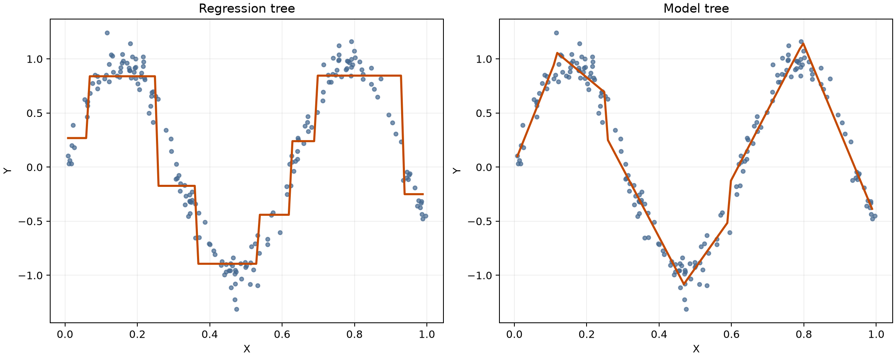

第七周复现了《机器学习实战》第 9 章的树回归源码，包括数据二元切分、回归树、预剪枝、后剪枝、模型树、预测函数和 Tkinter 交互界面。代码主线仍然是递归建树，但叶节点不再保存类别，而是保存一个平均值或一条线性模型。
这篇复盘会讲清楚
- 回归树与分类树的叶节点有什么不同
- tolS、tolN 怎样控制树的复杂度
- 预剪枝和后剪枝分别在什么时候发生
- 为什么模型树的拟合曲线比回归树平滑
一、把“选择类别”改成“预测数值”
第 3 章的分类树会连续提出问题，最后在叶节点给出“是”或“否”等类别。回归树的结构相似，只是叶节点换成连续数值。书中最简单的叶节点直接使用所在区域目标值的平均数：
def regLeaf(dataSet):
return float(np.mean(dataSet[:, -1]))
def regErr(dataSet):
return float(np.var(dataSet[:, -1]) * np.shape(dataSet)[0])方差 × 样本数正好对应目标值相对均值的残差平方和。建树时要寻找能够让左右两部分总误差下降最多的特征和阈值。
像先按照某条规则把顾客分组，再用每组的平均消费金额作为组内所有人的预测。
二、一次切分到底做了什么
binSplitDataSet把数据分成“大于阈值”和“小于等于阈值”两部分：
def binSplitDataSet(dataSet, feature, value):
matrix0 = dataSet[np.nonzero(dataSet[:, feature] > value)[0], :]
matrix1 = dataSet[np.nonzero(dataSet[:, feature] <= value)[0], :]
return matrix0, matrix1在 ex00.txt 的 200 个样本上，按第 0 列和 0.5 切分后，左右分别有 116 和 84 个样本。最终简单回归树为：
根节点：第0个特征 > 0.48813
左叶节点：1.0180968
右叶节点：-0.0446503新样本大于 0.48813 就走左边，得到约 1.0181；否则走右边，得到约 -0.0447。
三、为什么回归树的曲线是阶梯
普通回归树的每个叶节点只返回一个常数。同一区域内，无论输入发生多小的变化，预测值都保持不变；跨过某个切分阈值时，预测值才突然跳到另一个叶节点的常数。

阶梯状不是绘图错误，而是回归树叶节点定义决定的。树越复杂，台阶越多，也越可能追随训练数据中的噪声。
四、chooseBestSplit 的三个停止条件
递归不能无限继续。书中的 chooseBestSplit 有三个主要停止条件：
- 当前区域内所有目标值都相同，不需要再切分。
- 最佳切分带来的误差下降小于
tolS。 - 切分后任意一个子集的样本数小于
tolN。
tolS像“这次分组至少要带来多少收益”，tolN像“每组至少要有多少人”。前者太小、后者太小时，树会不断细分；限制太强时，树又可能没有足够表达能力。
五、预剪枝参数对树大小的影响
| 参数 ops | 含义 | 节点数量 |
|---|---|---|
(1, 4) | 书中默认限制 | 83 |
(0, 1) | 几乎不限制切分 | 399 |
(10000, 4) | 要求很大的误差下降 | 3 |
这叫预剪枝：树在生长过程中就根据规则提前停止。它速度快，但参数如果设得过严，可能把原本有用的分支也阻止掉。
六、后剪枝：先长出来，再决定是否合并
后剪枝先使用较宽松的参数生成复杂树，然后使用独立测试数据，从树的底部开始判断两个叶节点是否应该合并：
不合并误差 = 左侧误差 + 右侧误差
合并误差 = 所有测试样本相对两个叶节点平均值的误差
只有合并误差更小时才合并。本次在 ex2test.txt 上剪枝后，节点数由 399 减少到 281。
七、模型树：叶节点里不再只有一个数字
模型树的叶节点保存一条线性模型。进入某个叶节点后，不是直接返回平均值，而是继续计算：
ŷ = w₀ + w₁x₁ + ... + wₙxₙ
在 exp2.txt 上生成的模型树只有 3 个节点，两个叶节点分别为：
左叶节点：[0.001699, 11.964774]
右叶节点：[3.468779, 1.185217]每个叶节点的第一项是截距，第二项是一次项系数。因为区域内部仍能随输入变化，所以图中的模型树曲线是分段直线，而不是水平台阶。
八、三种回归方法的实际比较
书中使用自行车速度与智商数据比较回归树、模型树和标准线性回归。训练集和测试集各有 200 条数据，预测值与真实值的相关系数为：
| 方法 | 测试相关系数 |
|---|---|
| 回归树 | 0.964085 |
| 模型树 | 0.976041 |
| 标准线性回归 | 0.943468 |
这一次模型树最高，说明分段线性关系比较适合这组数据。但相关系数只描述共同变化程度，不等于所有样本的预测误差都最小，也不能据此断言模型树在任何数据上都更好。
九、作者 Notebook 中的一处笔误
作者 Notebook 计算标准线性回归预测时写成了：
yHat[i] = testMat[i, 0] + ws[0, 0]这行只把输入与截距相加，漏掉了斜率。根据前面求出的权重，正确的线性模型应为：
yHat[i] = ws[0, 0] + testMat[i, 0] * ws[1, 0]本次按照后一种方式计算，并在案例代码中用中文注明。核心树回归函数仍按作者源码的结构复现。
十、新版环境中的兼容处理
- 新版 NumPy 已移除
np.mat，改用np.matrix保留书中矩阵乘法语义。 - 单元素矩阵改用
item()提取标量，避免新版 NumPy 的弃用警告。 - 数据路径相对于
regTrees.py定位，PyCharm 直接运行也能找到数据。 - 书中
FigureCanvasTkAgg.show()已经移除，交互界面改用新版draw()。
这些地方都在源码中有中文注释，算法的切分规则、字典结构和递归流程没有改成其他实现。
十一、目前还没有真正弄懂的问题
- 三个停止条件的配合。单独看懂了每个判断，但面对较深递归时还不容易判断最终会在哪里停止。
- 后剪枝的返回过程。知道它从底部尝试合并，但复杂树中每次返回到哪一层仍容易看乱。
- 参数选择。现在只比较了节点数量，还没有用验证集系统选择 tolS 和 tolN。
- 评价指标。相关系数方便比较趋势，但还需要同时计算测试 RSS 或 RMSE。
十二、下周计划
- 01手画一遍递归树
记录每次切分的数据范围、误差变化和停止原因。
- 02比较剪枝前后测试误差
除节点数量外，再计算测试 RSS，确认合并确实有价值。
- 03补做上周遗留实验
继续用独立测试数据比较局部加权回归的不同 k 值。
- 04进入第 10 章 K 均值聚类
学习距离计算、质心更新和误差平方和。
十三、第七周最值得保留的认识
切分递归台阶剪枝局部模型
回归树通过不断切分和递归建立区域，每个叶节点输出常数，因此形成台阶；为了避免树追随噪声，需要预剪枝或后剪枝；模型树再把叶节点升级成局部模型，让每个区域内部继续保持线性变化。
如果只用一句话总结第七周，那就是：树模型不是只会做分类，它也可以把复杂的回归关系拆成多个容易处理的小区域。